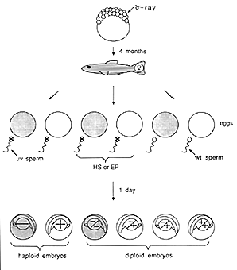

CHAPTER 7 - GENETIC METHODS
Overview of Methods for Parthenogenesis
(Source: C. Walker)
Zebrafish eggs are fertilized outside the body making it possible to manipulate the process to advantage. For example, haploid embryos can be produced by fertilizing eggs with sperm that have been irradiated with ultra violet light (UV sperm) destroying the sperm DNA so that it cannot contribute genetically to the embryo but leaving the sperm intact and able to activate the eggs. Haploid embryos develop from the female genetic complement only. Any mutation carried by the female will be seen in her haploid offspring. Additionally it is possible to make these haploid embryos diploid by application of pressure or heat shock during early developmental stages. This section provides an overview of these genetic methods. Detailed procedures follow in a later section.
UV Sperm
Sperm is collected and pooled into ice cold Hank's solution as described in Embryo
Production By In Vitro Fertilization. It is important to keep the sperm solution relatively dilute because of possible shielding of the UV.
Ice is put in the bottom half of a 10 cm glass petri plate. Sperm is pipetted onto a watch glass sitting on top of the ice taking care not to introduce bubbles. Removing the glass lid under a UV lamp exposes the sperm to UV. Sperm is irradiated by a Sylvania 18 inch 15W germicidal lamp at 38 cm or 15 inches from the watch glass for 2 minutes with gentle mixing. Wear latex gloves and glass safety glasses for your own protection from the UV. Use a clean pipette to pipette the sperm into a clean glass tube and kept on ice. It will fertilize eggs efficiently for up to 90 minutes (just as non-irradiated sperm) producing haploid embryos with only 25 chromosomes in each cell.
Haploid Embryos
Haploid embryos have a characteristic syndrome. The body is shorter and thicker than a diploid; the brain is less clearly sculptured; the ears are variable in number; and the heart beats in a swollen pericardial cavity. Haploid cells are smaller than diploid cells and there are problems with organogenesis. For example, blood cells seem to be too large for the blood vessels and most haploid embryos have circulation problems. Haploid embryos live only about five days.
For all their faults, haploids are consistent enough to be useful for identifying changes in early development caused by mutations. The haploid mutant phenotype sometimes differs from the mutant phenotype observed in diploids (often the haploid phenotype is more severe), but one is alerted to the mutation and can do the appropriate crosses to produce a diploid.
Haploid embryos are used to identify new mutations in mutagenized females as well as to screen and identify mutation-bearing heterozygous females.
Production of Gynogenetic Diploid Embryos
There are two times during the first cell cycle of a UV-fertilized egg when there is a diploid complement of chromosomes from the female. One is during the second meiotic division and the other is during the first mitosis. Preventing chromosome separation at either of these times will restore the diploid number of chromosomes.
1. Early Pressure
When eggs are first laid, the chromosomes are condensed, ready to separate in the second meiotic division. A pulse of hydrostatic pressure (EP) at the right time will break down the spindle, preventing chromosome separation and the extrusion of the polar body. The then diploid set of chromosomes replicates and separates in the first mitotic division, producing a viable gynogenetic diploid embryo.
Eggs are squeezed from the female and fertilized
with UV-irradiated sperm as described in Embryo
Production By In Vitro Fertilization. The timer is started when
the first water is added to the egg-sperm mixture.
Eggs are quickly put into a pressure vial and the
vial filled totally with egg water. The vial is capped
with a rubber sheet and plastic snap cap being careful
not to leave any air bubbles in the vial. The vial
is put into the water-filled French pressure chamber
and the chamber is put on the French Press. At 1.4
min after fertilization, pressure is applied until
the gauge reads 1800 (or 8,000 lbs per square inch).
At 6 min, the pressure is slowly released over a
period of 1 min. The vial is removed and the eggs
left undisturbed in the vial at least an hour. Then
fertile eggs are sorted from infertile or dead eggs.
T = 0 Fertilize eggs with UV-irradiated sperm
T = 1.4 min Apply pressure quickly
T = 6.0 min Slowly relieve pressure
It is easy to stop the second meiotic division and one can anticipate 50%-80% of the offspring to be viable in an EP experiment. The males and females which grow from an EP stock are fertile, but not quite as hardy as normal diploid fish.
Even though the genes from EP diploids all come from the female, they are not homozygous at all loci. This is because sister chromatids in the 2nd meiosis have already undergone crossing over in the first meiosis. Genes close to the centromere are likely to be homozygous; those far from the centromere are not. In fact, EP is used to construct a crude genetic map of linkage of genetic loci to the centromere.
The vials used for EP experiments are 5 ml milk dilution vials covered with a rubber sheet and a plastic snap cap. A hole is cut in the cap exposing the rubber sheet to the pressure. Two vials fit comfortably in the French pressure chamber so two batches of eggs fertilized simultaneously can be pressure treated together.
2. Heat Shock
The aim of heat shock (HS) is to prevent chromosome separation and cytokinesis of the first mitotic division. It is different from EP in that meiosis has occurred and the haploid set of chromosomes of the female have replicated themselves prior to the 1st cell division. They are, therefore, homozygous for every gene. Heat shock prevents the first cell division by some unknown mechanism, thus restoring diploidy in some embryos. The second cell division becomes the "first" and so on.
Eggs are squeezed from the female and fertilized with UV-irradiated sperm. After 5 min the eggs are transferred to heat shock cylinders (plastic cylinders with a mesh bottom described below) and put into a large beaker filled with egg water sitting in a 28.5•C water bath. At 13 min after fertilization, the vial is moved quickly to a large beaker of water at 41.4•C transferring as little of the 28.5•C water as possible. After two minutes, the cylinder is moved back to the 28.5•C water. After sitting in the 28.5•C beaker for 45 min, the eggs are transferred to a glass beaker and eventually the surviving embryos are sorted from the infertile or dead eggs.
T = 0 Fertilize eggs with UV-irradiated sperm
T = 05 min Transfer embryos to 28.5C
T = 13 min Move cylinder from 28.5 to 41C
T = 15 min Move cylinder from 41 to 28.5C
It is very difficult to stop the first mitotic division. Only 10%-20% of the embryos survive as diploids to grow to adulthood. Homozygous diploids can be fertile males or females.
We make HS cylinders from Beckman Ultraclear centrifuge tubes by cutting off the bottom of the tube and attaching a nylon mesh bottom using methylene chloride as the "glue" (done in a hood). The thin plastic of the cylinders transfers very little heat or cold.
The temperature of the 41C bath is held very accurately. Too low a temperature produces haploids and too high a temperature kills embryos. Different strains may require a slightly different temperature. An immersible stirrer drives a magnetic stirring bar in the 41C beaker to keep the temperature uniform.

Figure 1 Strategies for mutagenesis and for uncovering and maintaining recessive lethal mutations. Recessive mutations are observed in haploid or homozygous diploid embryos produced by the heat shock (HS) or early pressure (EP) procedures. Recessive, lethal mutations are maintained as heterozygotes generated by crossing eggs with wildtype sperm (WT). (From Kimmel, 1989.)
The Zebrafish Book